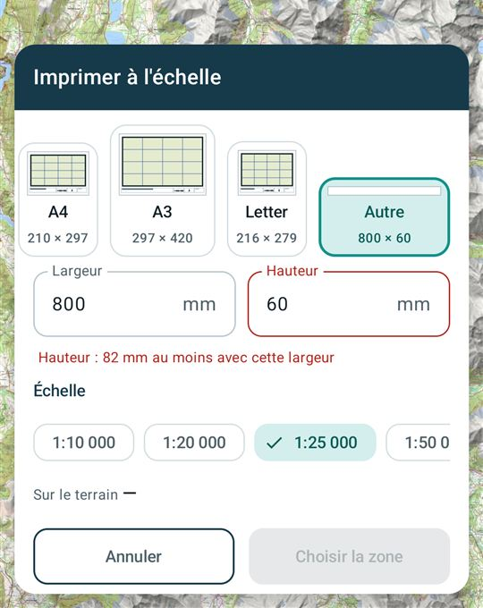
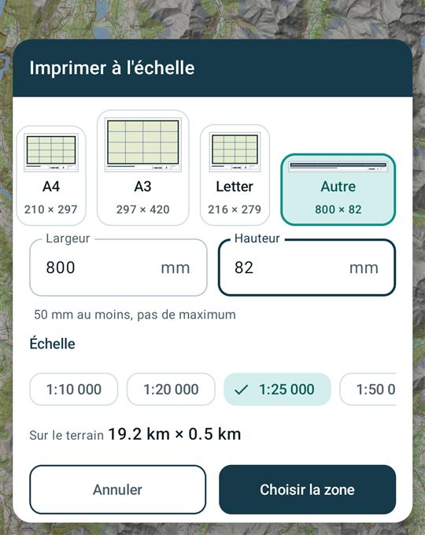
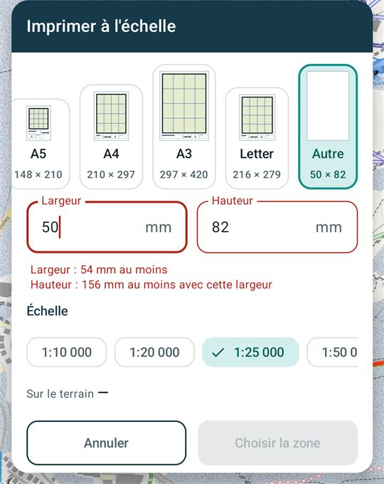
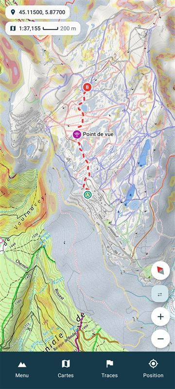
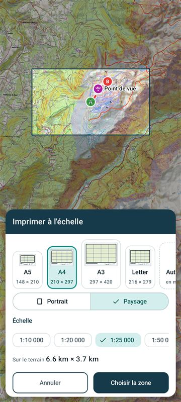
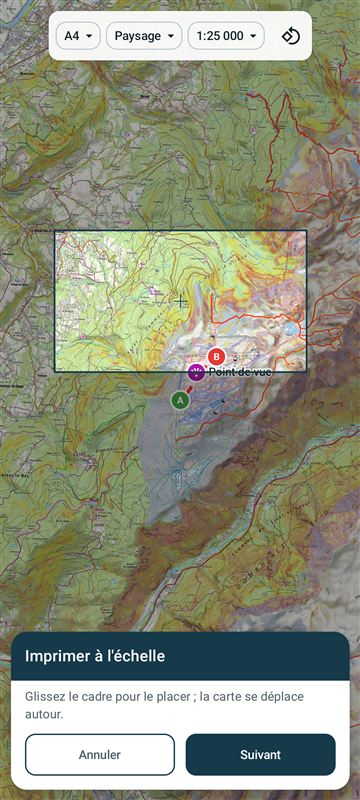

Impression : les variantes C et P1 sur l'émulateur
Aperçu docs/previews/p17-format-sans-place.html validé le 2 novembre 2026 (« 1 : C , 2 : P1 »). Rendu de la release android-0.4.147 (commit aa970d4) sur l'émulateur Android 16, le même jour.
1. Une feuille sans place pour la carte (Autre, 800 × 60 mm, 1:25 000)
À 800 mm de large, le bandeau du bas prend 28,6 mm et les bords 2 × 16,6 mm : il faut 82 mm de hauteur pour garder 20 mm de carte.
Imprimer à l'échelle
A4210 × 297
A3297 × 420
Autre800 × 60
Largeur800mm
Hauteur60mm
Hauteur : 82 mm au moins avec cette largeur
1:20 000✓ 1:25 0001:50 000
Sur le terrain —
AnnulerChoisir la zone



2. « Annuler » remet la carte où elle était
Carte de départ tournée de 40°, au 1:37 155. Les captures 1, 3 et 5 sont identiques à l'octet près : centre, zoom et orientation reviennent exactement.

45.11500, 5.87700 · 1:37 155

carte au nord, cadre A4 au 1:25 000

45.11500, 5.87700 · 1:37 155

« Choisir la zone », puis un glissé

45.11500, 5.87700 · 1:37 155
- Le ✕ de la confirmation laisse la carte sur la zone (44.94025 · 1:311 117 dans l'essai), comme le prévoit P1. Retour arrière et « Fermer » après un PDF font de même.
- Le même « Annuler » vaut pour l'impression le long d'une trace (test JVM ; pas refait sur l'émulateur).